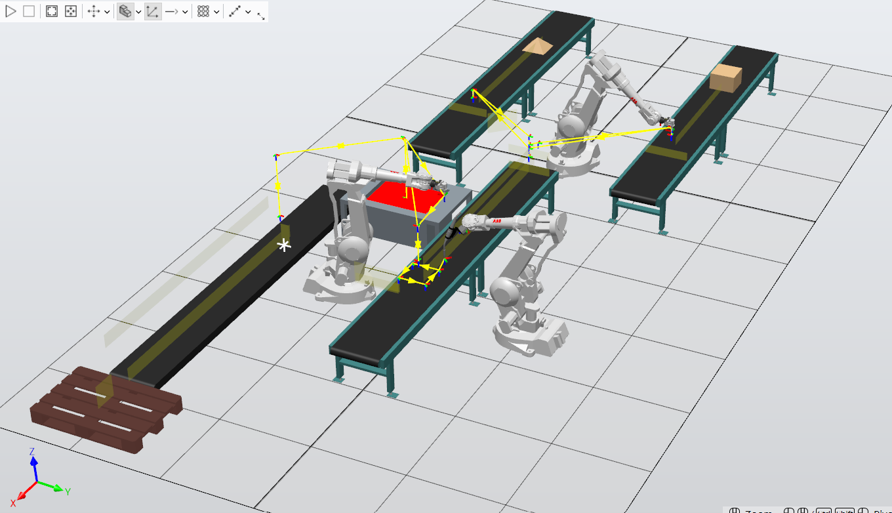

Industrie 4.0 · Simulation robotique
Conception et simulation d’une ligne de production automatisée.
Modélisation d’une Smart Factory et coordination de plusieurs opérations de production à l’aide d’ABB RobotStudio et de composants intelligents.

Présentation
Réalisé dans le cadre du cours Introduction to Smart Factory & Digital Manufacturing à l’UTSEUS, ce projet consistait à concevoir et simuler une ligne de production automatisée dans un environnement virtuel ABB RobotStudio. L’objectif était de représenter les interactions entre les robots, les systèmes de transport et les différentes étapes d’un processus industriel.
Le scénario retenu repose sur deux composants initialement indépendants, acheminés vers une première cellule où ils sont manipulés et superposés par un robot. Le produit assemblé suit ensuite une succession d’opérations de soudage, de peinture par immersion, puis de conditionnement.
Travaux réalisés
- Conception de l’environnement 3D de la ligne de production dans ABB RobotStudio.
- Organisation du flux de matière entre les différentes cellules et postes de travail.
- Configuration de composants intelligents (Smart Components) pour représenter la création, le déplacement et la détection des pièces.
- Mise en place de la logique de coordination à partir de capteurs, de signaux et de composants d’attachement/détachement.
- Simulation des étapes de prise et dépose, d’assemblage, de peinture et de conditionnement.
- Analyse des difficultés de stabilité et de répétabilité rencontrées lors de l’exécution de la simulation.
Architecture de la simulation
Le fonctionnement de la ligne s’appuie sur plusieurs fonctions complémentaires : les composants Source génèrent les pièces, les LinearMovers assurent leur déplacement le long de trajectoires définies et les PlaneSensors détectent leur passage. Les signaux associés permettent de déclencher les opérations suivantes. Les fonctions Attacher et Detacher représentent les changements d’association entre les objets, tandis qu’un composant Sink marque la sortie du produit en fin de ligne.
Le recours aux LinearMovers constitue une simplification volontaire : le projet se concentre sur la circulation des pièces et la coordination des opérations plutôt que sur la simulation mécanique détaillée des convoyeurs.
Résultats et bilan
Ce projet m’a permis d’aborder la modélisation d’un système de production dans son ensemble, en reliant l’environnement 3D, les flux de pièces et la logique événementielle des différents postes. Il a également mis en évidence l’importance de la synchronisation entre composants et de la vérification de chaque étape dans une simulation multi-opérations.
Des limites de stabilité et de répétabilité ont été observées pendant les essais, notamment lorsque la simulation sollicitait fortement les ressources informatiques. Ces difficultés ont souligné la nécessité de procéder à des tests progressifs et reproductibles avant de considérer une séquence complète comme validée.
Vidéo du projet
La vidéo ci-dessous présente une démonstration du projet réalisé sous ABB RobotStudio.